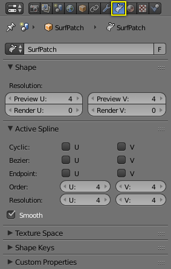

属性¶

曲面属性。¶
曲线和曲面 面板与 曲线 一样, 只是有更少的选项.
激活的样条¶
关闭和开放的表面¶
与曲线类似，可以在两个方向上独立地关闭（循环的）或打开曲面，使您可以轻松创建管，圆环或球形，并且可以在 编辑模式 中将其绘制为“实体”。这使得曲面的工作相当容易的。
贝塞尔, 端点¶
就像 NURBS曲线, NURBS曲面有两个结矢量，每一个都有U和V轴。再次，它们可以是 循环，断点 或 贝塞尔 之一，具有与曲线相同的属性。和曲线一样，只有开放表面（在相关的方向上）受到这个设置的影响...

端点 U.¶
Fig. 端点 U. U插补轴标记为“U”，V插补轴标记为“V”。 U的插补轴已被设置为*端点*，因此表面现在沿着U插补轴延伸到从E1到E2的外边缘。
为了使表面扩展到所有的边缘，你也可以把V轴设置为 端点。
次序¶
再提一次, 属性和 NURBS 曲线 一样, 它规定了计算曲面形状曲线时考虑了多少控制点。 对于高序1，曲面从控制点拉开，通过假设 分辨率 足够高来创建更平滑的曲面。对于最低序2，表面跟随控制点，产生趋于跟随网格笼的表面。

序2和序4的表面.¶
为说明目的，在这两个图 序2和序4的表面., 结矢量被设置为 端点，导致表面延伸到所有的边缘。
您可以独立设置每个插补轴的序，如同曲线一样，它 不能 低于2，高于6或相关轴上控制点的数量。